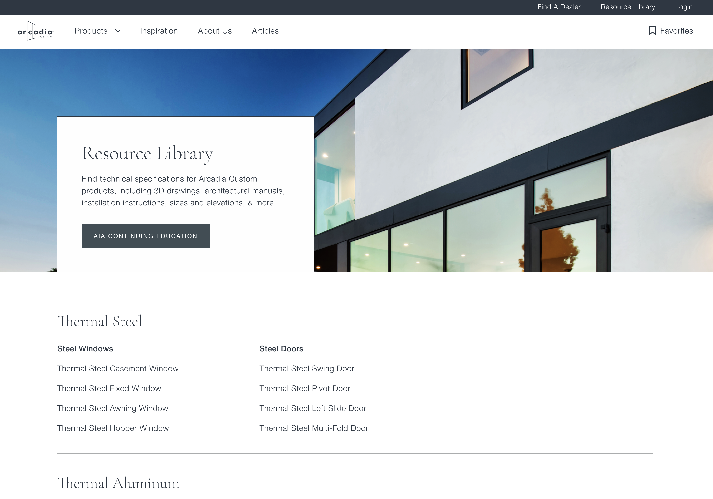
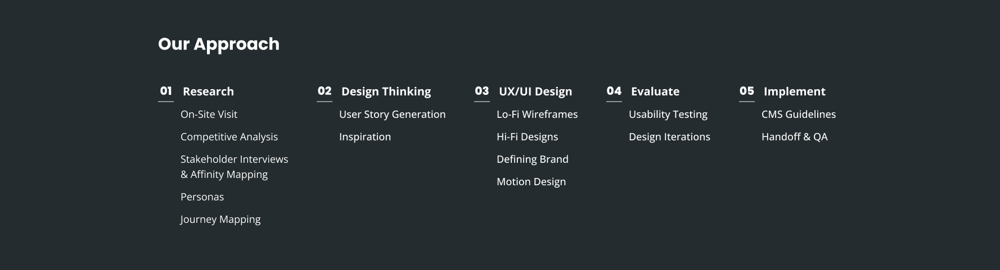
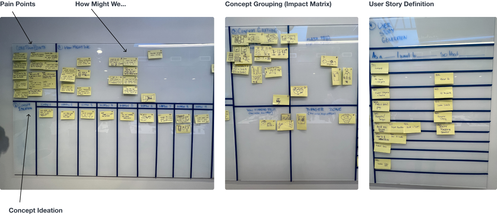
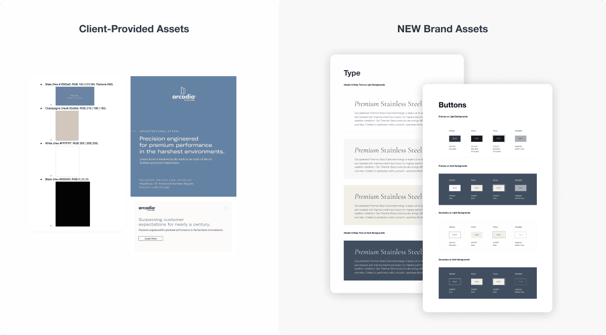
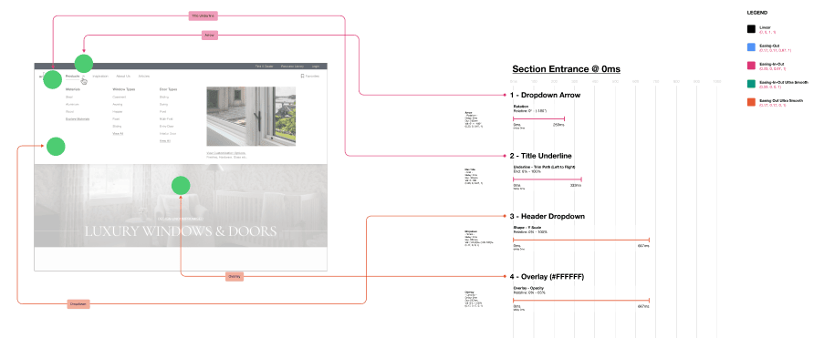

Luxury Windows & Doors for High-End Residential Market
Redesign
Branding
Design System
My Role
I led the Konrad Design team in reimaging Arcadia Custom's web experience and visual system. Helping to improve the home building process for homeowners and professionals.
I had the pleasure of working closely with key stakeholders, Greg, Heather and Peter, as well as an amazing team of 3 designers and 3 strategy members. In 10-Weeks, we evaluated the existing website, identified high impact areas and designed a fully responsive website that aligns with their status as a luxury brand.
The site is currently in development and will launch in January 2024.
Project Overview
Arcadia Custom provides custom-made, luxury windows & doors to the high-end residential market. They have a strong reputation in the architectural space for the quality and performance of their products.
They wanted to create a digital experience that is an extension of the premium services they provide, while easing the home building process for their core audiences.
My Role
Experience Design Lead
Timeline
June - August 2022
Deliverables
Responsive Website, End-to-End Development
The Challenge
A luxurious, high-end experience that meet the needs for each persona group:
Homeowners have difficulty visualizing how different customization and configuration options would match the style they’ve envisioned for their home. They would like to feel informed when making a large purchase and experience the quality of products before going to a physical showroom location.
Professionals (Architects, Dealers and Builders) require technical documentation and 3D assets to be readily available. It is extremely frustrating for them to submit a manual request for every file they need and wait for a response.
Design Highlights
A few key highlights that address major pain points in the existing site experience.
Enhanced Product Discoverability
Homeowners can easily discover product offerings, explore different materials and view customization options in the navigation.
Brand & Storytelling initiative
We’ve crafted a beautiful narrative on each page to create a cohesive visual story around Arcadia Custom’s brand identity.
Product Flexibility & Customization
We've showcased Arcadia Custom's expansive list of design options in a way that's easy for homeowners and professionals to understand.
Centralized Resources for Professionals
Arcadia Custom partners with a nation-wide network of professionals to enable their solutions. We designed a library of resources for their partners to access as they need.


Research
In preparation for the Design Thinking Session (DTS), we had a 2-Week Research & Discovery Phase to understand the current competitive landscape, conduct interviews, create personas, user journeys and gather inspiration.
On-Site Visit
Arcadia Custom has a network of over 140 high-end window and door dealers across the nation. A few members of our New York team had the opportunity to visit a facility in Stamford to conduct interviews.
We learned that:
Customers are sold on Arcadia Custom products before they come in by recommendations from pre-qualified architects and builders
Customers immediately feel the value of the product upon touching it. They are always impressed with the build quality and weight. They are not price sensitive, they just want the best visual and design
Every Arcadia Custom product is made to the specs of the house it will be installed in. Most of their competitors have standard sizes that architects/builders have to work around (24” x 36”)
Competitive Analysis
To better understand the competitive space, we examined how direct competitors met the needs of homeowners and professionals looking to use their products. Specifically taking note of the information architecture (overall ease of navigation), products (product detail page and specs) and process (inspiration gallery).
We learned that:
Top-level luxury brands in the window & door space lacked innovative, modern site experiences. We needed to lean on best practices and inspiration from brands at a lower level of luxury as well as parallel industries to craft an experience best suited for Arcadia Custom.
Stakeholder Interviews & Affinity Mapping
To gather insight from internal teams, we conducted 7 interviews with stakeholders across Arcadia Custom and DMC Global. Each interview was approximately 45 minutes, in-person or through video. The topics covered were specific to each interviewee’s department and area of expertise.
With results from the stakeholder interviews, we then moved on to an affinity mapping exercise. This activity produces a physical, tactile and editable design artifact that helps us visualize common trends, themes, areas of opportunity and improvements.
We learned that:
High quality photography is crucial to show products’ context in a home
Raising the brand perception of Arcadia Custom is a top priority (luxury, quality and value)
The product quality of Arcadia Custom is unmatched by competitors
It’s important that we address the needs of all of our persona groups
Personas
To better inform our design decisions and build empathy for our users, we synthesized stakeholder interviews to create the following personas:
After reviewing the personas with our clients, we adjusted Dealer David’s persona from secondary to primary - as dealer’s are highly valued for their product expertise and sales. Making the three primary personas - Homeowner Hannah, Architect Adam and Dealer David.
Journey Mapping
In order to create a personalized experience, we needed to fully understand how each persona interacts with one another. To do so, we created user journeys for each persona then consolidated them into one user journey map. This helped surface overlapping pain points that we would later address in our designs.
Design Thinking Session
After the Research & Discovery phase, I met the project team and clients in New York for a full-day Design Thinking Session (DTS). The session ran from 9am to 4pm with lunch and breaks provided. Our objective was to walk our clients through the current landscape, themes that had been synthesized from the stakeholder interviews and run through activities that would help generate user stories. These user stories would then be used for epics, requirements and designs.
My role in the DTS was to participate in user story generation and lead the final activity, the inspiration session.
User Story Generation
1. How Might We
Instructions: Generate HMW statements for each pain point. Align on 1 HMW statement per pain point.
2. Concept Ideation
Instructions: Draw 3 unique ideas/concept that you think could address each HMW statement.
3. Concept Grouping
Instructions: Organize concepts into groups along the Impact Matrix. Discuss & name each group.
4. User Story Definition
Instructions: Take each concept grouping and write at least 1 user story for each by personas.

Inspiration Session
The final activity of the day was the inspiration session. Our objective was to get the team excited about future designs and provide visual guidance for the design phase.
We started the activity by having each client walk through 1-2 pieces of inspiration they had prepared and why they selected them. For the rest of the activity, we structured our conversation around 3 key themes. Each theme had 3-5 contrasting examples that approached the problem in different ways.
The themes we selected were:
HMW use content to convey premium products?
Luxury brands use strong imagery and a well-crafted narrative to build trust. We selected a range of visual styles to help understand what our clients want to achieve.
HMW help customers visualize products in their home?
This is a key pain point for homeowners during our interviews. We selected inspiration that push the boundaries of ‘what’s possible’.
HMW communicate customization & product flexibility to all personas?
Arcadia Custom’s brand pillar and key pain points for:
Homeowners who care about visual appeal
Architects want to bring their vision to life
We learned that:
Drawn to Photography websites - large, high-quality images and bold text headings
Showcasing products from different views / angles / within context of a designed space
Likes dynamic movement, more modern and visually compelling
Dislikes lifestyle imagery, feel like humans take away from a high-end site experience
UX/UI Phase
After the DTS, we began a 10-week UX/UI Design Phase. The Strategy team quickly got started on synthesizing results into epics and requirements while the Design team began low-fidelity. We had client demos every 2 weeks to get feedback and approval. While working on lo-fis, we also prepared interactive prototypes for usability testing and iterated on feedback.
In total, we designed 12 responsive page templates for desktop and mobile.
Low Fidelity Wireframes (Sprint 1-3)
The team worked on lo-fis based epics with the greatest impact for our users. For each epic, we created persona-specific user stories that were approved by stakeholders.
First Project using AEM Core Components
Core components is an internal library built by the Konrad team. It is intended to be used as building blocks for standard marketing and informational sites. Since both projects were working in parallel, our team relied on core components as they were being defined. There was no onboarding process, files, guidelines and written documentation were incomplete which made it difficult to use the library.
As a result, we worked closely with the AEM team to push core components to their limits - creating a more flexible and robust system of components.
Reducing Complexity
Core components is an internal library built by the Konrad team. It is intended to be used as building blocks for standard marketing and informational sites. Since both projects were working in parallel, our team relied on core components as they were being defined. There was no onboarding process, files, guidelines and written documentation were incomplete which made it difficult to use the library.
As a result, we worked closely with the AEM team to push core components to their limits - creating a more flexible and robust system of components.
High Fidelity Designs (Sprint 4-6)
While Lo-Fi designs were waiting on approval, the team began to establish design patterns, curating imagery…
The clients took it upon themselves to define brand guidelines with an external team. What we received did not capture the luxurious brand they were looking to achieve. We took it on ourselves to introduce a new color palette, typography and branding system take their brand to the next level.
Client-Provided Assets (Left)
Four brand colors were provided in google docs (including black #000 and white #fff)
Colors pairings did not pass AA accessibility (below 3 color contrast)
Color palette & typography did not align with a luxury brand, felt more like corporate, tech or healthcare
No guidelines provided (Do’s and Don’ts)

Adding Motion (Sprint 5)
Collaborated with a motion designer…

Evaluate
In parallel with the UX/UI Phase, we reviewed designs during client demos and conducted usability testing.
Usability Testing
The team worked on lo-fis based on epics with the greatest impact for our users. For each epic, we created persona-specific user stories that were approved by stakeholders.
Testing & Iteration Process
Who were the participants?
How did they rank designs?
Test results by persona
Design Iterations
Work in progress
Implementation
Towards the end of the 10-Week design phase, I created an implementation file documenting key flows to ensure that the development team had everything they needed to get started. I also created authoring guidelines for the client for how to select imagery, aspect ratios, character counts… etc.